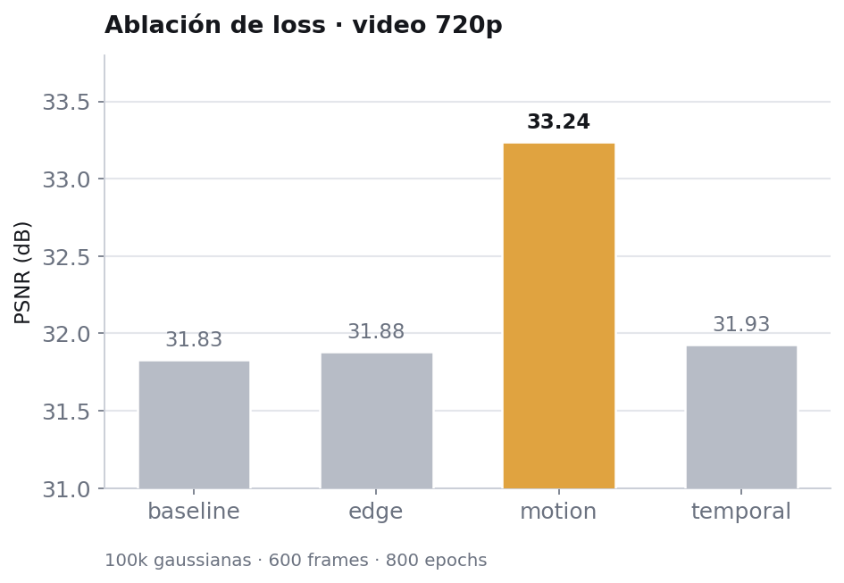
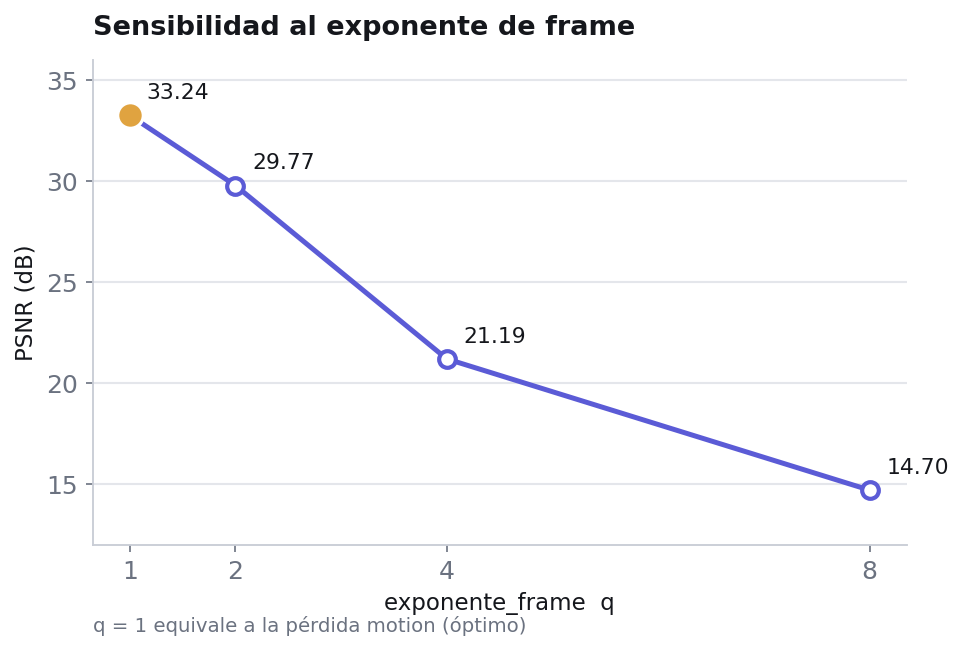
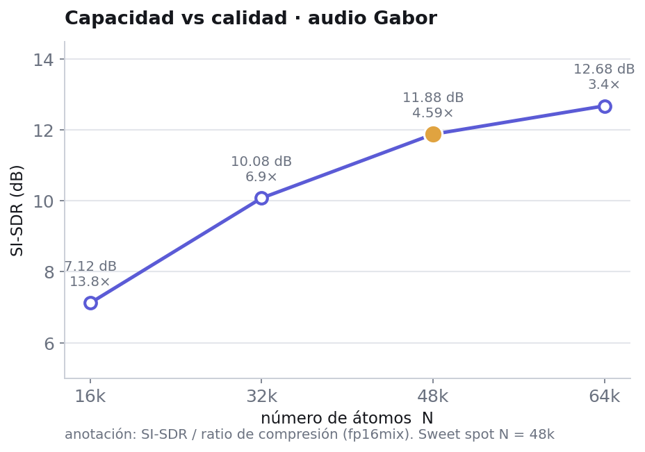
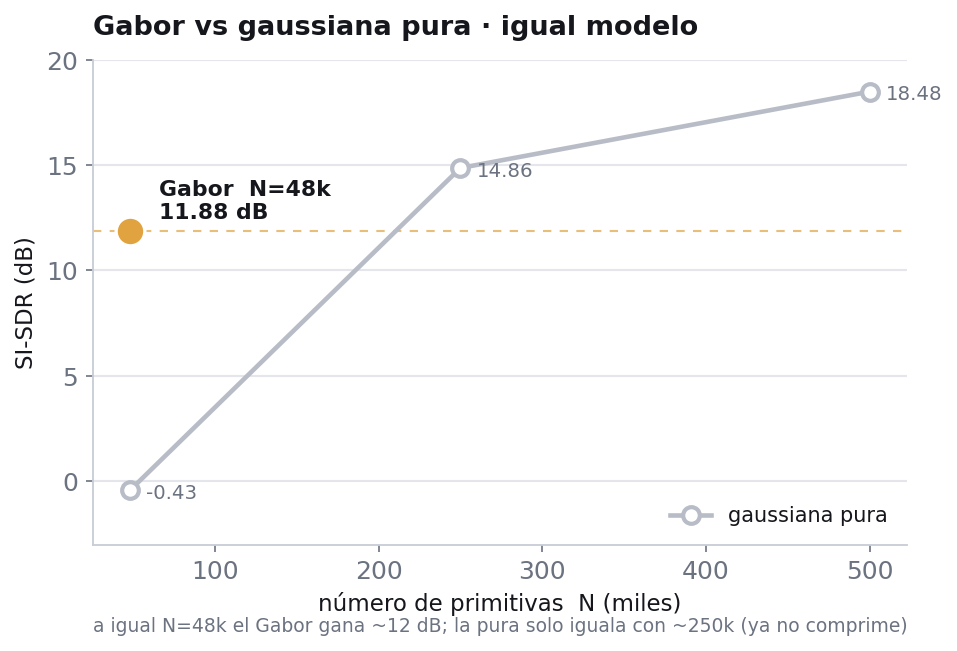
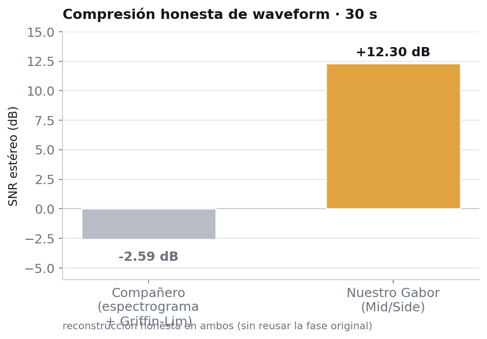

Resumen
Una representación continua, no una rejilla de píxeles
Proponemos un marco unificado que representa contenido multimedia como una superposición de primitivas gaussianas 2D cuyos parámetros se ajustan por descenso de gradiente. En lugar de almacenar muestras (píxeles o amplitudes), almacenamos los coeficientes de un conjunto compacto de primitivas que reconstruyen la señal.
La línea principal es el video: cada parámetro de cada gaussiana (posición, opacidad, color, escala, orientación y profundidad) es un polinomio de Chebyshev en el tiempo, de modo que un único conjunto de coeficientes describe el clip completo y el tamaño del modelo es independiente del número de frames. Como segunda modalidad, mostramos que el mismo principio generaliza al audio: la waveform se representa con átomos de Gabor directamente sobre el eje temporal, sin STFT y modelando la fase de forma implícita. La evidencia proviene de nuestras propias ablaciones, no de comparaciones head-to-head contra implementaciones externas.
Video · Chebyshev 2DGS
Reconstrucción de video con gaussianas temporales
Cada gaussiana viaja en el tiempo a través de coeficientes de Chebyshev. Compara la verdad de referencia con nuestra reconstrucción: arrastra el divisor sobre un frame, o reproduce los dos clips en paralelo.
Frame de muestra. Reemplaza assets/frames/*.png por tu par GT / reconstrucción.
Los dos clips se mantienen sincronizados frame a frame. Reemplaza assets/videos/compare_*.mp4 (mismo tamaño y duración).
Ablaciones


| tipo_loss | PSNR | PSNRmin | SSIM | LPIPS | PSNRtemp |
|---|---|---|---|---|---|
| baseline | 31.83 | 28.10 | 0.962 | 0.0594 | 35.17 |
| edge | 31.88 | 28.05 | 0.963 | 0.0574 | 35.23 |
| motion | 33.24 | 30.32 | 0.965 | 0.0483 | 36.88 |
| temporal | 31.93 | 28.32 | 0.963 | 0.0588 | 35.32 |
42.27 dB PSNR promedio
SSIM 0.984 · LPIPS 0.0175 · PSNR temporal 48.14. A esta densidad la calidad sube mucho; el pruning y la cuantización son el siguiente paso para mejorar el ratio de compresión.
Audio · Gabor splatting
El mismo principio, ahora sobre la waveform
La señal de audio se representa como suma de átomos de Gabor (una gaussiana modulada por un coseno) directamente en el tiempo, sin espectrograma y modelando la fase de forma implícita. Escucha el mismo instante en cada versión.
Cambiar de fuente conserva el instante: pulsa entre versiones para A/B en el mismo punto. Audios de muestra — reemplaza assets/audio/*.wav.
Capacidad y el papel de la modulación


| N (átomos) | SI-SDR | LSD | Mel-L1 | ratio fp16mix |
|---|---|---|---|---|
| 16k | 7.12 | 12.66 | 1.47 | 13.8× |
| 32k | 10.08 | 10.49 | 0.90 | 6.9× |
| 48k | 11.88 | 8.31 | 0.671 | 4.59× |
| 64k | 12.68 | 8.42 | 0.63 | 3.4× |
| modelo | N | SI-SDR | LSD | tamaño | ratio |
|---|---|---|---|---|---|
| Gabor | 48k | 11.88 | 8.31 | 960 KB | 2.76× |
| Gaussiana pura | 48k | −0.43 | 33.56 | 576 KB | 4.59× |
| Gaussiana pura | 250k | 14.86 | 17.11 | 3.0 MB | 0.88× |
| Gaussiana pura | 500k | 18.48 | 15.68 | 6.0 MB | 0.44× |
Comparación honesta
Compresión honesta de waveform
Frente a un enfoque por espectrograma con reconstrucción Griffin-Lim, el Gabor reconstruye la waveform sin reutilizar la fase original. Bajo esa condición —la única honesta para comparar compresión— la diferencia es marcada. Lo enmarcamos como nichos complementarios, no como descalificación: cada método comprime mejor en distintos regímenes de duración.

| enfoque | SNR estéreo | MSE estéreo |
|---|---|---|
| Espectrograma + Griffin-Lim | −2.59 | 0.1485 |
| Gabor Mid/Side (nuestro) | +12.30 | 0.0048 |
El enfoque por espectrograma con la fase original alcanza SNR 13.66, pero guardar la fase ocupa tanto como la magnitud: no es compresión honesta. El Gabor modela la fase por construcción.
Cita
BibTeX
@mastersthesis{tunombre2026splatting, % VERIFICAR clave y tipo
author = {[Tu nombre]},
title = {Splatting de primitivas para representación y
compresión multimedia},
school = {[Universidad]},
year = {2026},
note = {Tesis de pregrado}
}